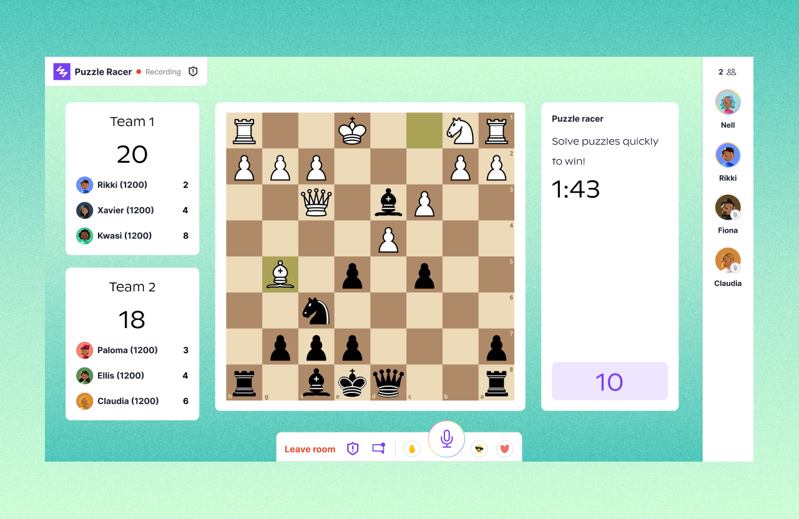
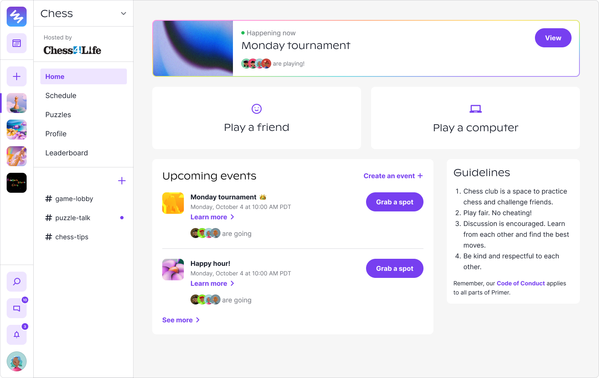
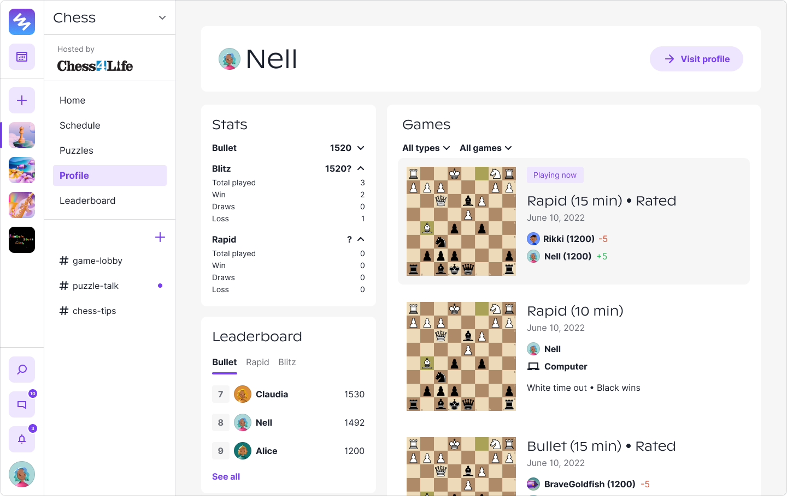
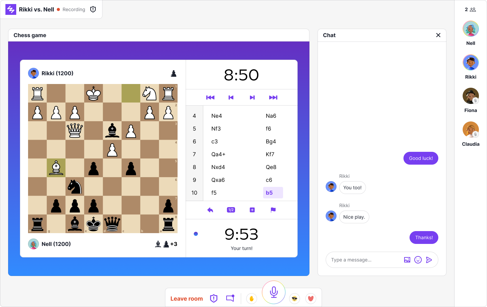
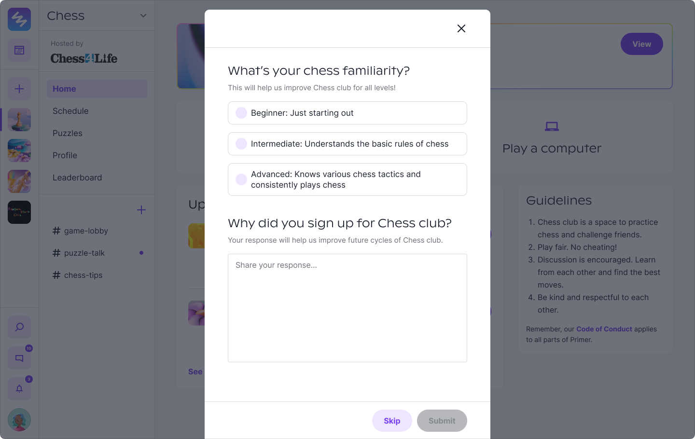
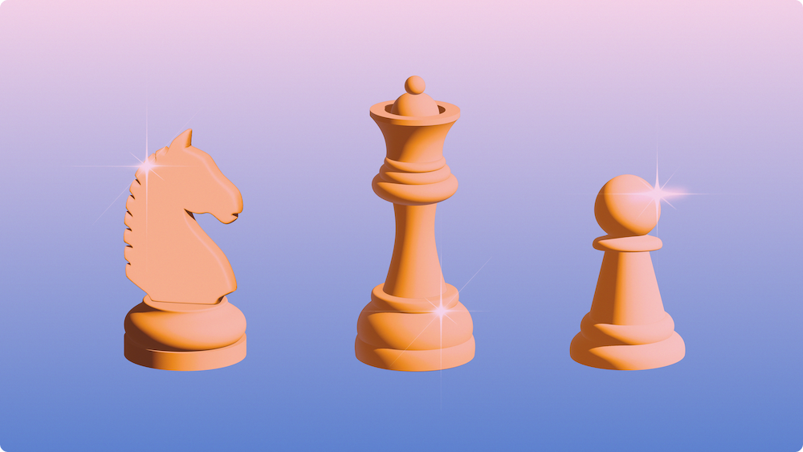

Chess Club
Primer, 2022
Primer was originally a space for kids to pursue their passions through clubs.
Kids could join various interest-based clubs on our platform like Naturalists and Gamers.
We started exploring 3rd-party led clubs and found Chess4Life.
We partnered with them to create a Chess Club on Primer.

Chess club's cover image.
Problem
Many of the most popular chess platforms aren’t kid-friendly. For example, Lichess is one of the best chess platforms, but they don’t have spaces for kids to discuss and play with each other. The internet can be a scary place! Chess4Life got around it by creating accounts for every kid in their classes and putting them on “kid-mode” that limited all chat and social features on Lichess. This isn’t an ideal solution and, honestly, not as exciting for kids!
Primer was well-positioned to tackle this problem as being an online space for only kids (ages 8-16).
Design
I’m not a chess player so I learned a lot of chess design from Lichess and Chess.com.
I started playing more and solving puzzles to figure out what’s intuitive and what’s not.
It was a pretty fun way to learn about the problems, but also very hard! Chess is not an easy game…
In phase 1, we built the basic features of a chess platform: playing a friend and computer, chess profile, and chess tournaments.

Chess club home page! You can play a friend or computer, find your chess profile, and join a tournament if there's one live.

You can review your games and stats on your profile.

This is what the tournaments were like! You were auto-matched after each game unless you "paused."
So, what did we build that was different from Lichess?
What did I have to consider from the kid platform lens?
The biggest thing is integrating Primer’s features with chess.
Primer already had social features like rooms, channels, and profiles for kids.
You could now play chess in a room, chatting with your opponent.

Playing chess in rooms unlocked live audio and chat. Other people could also join your games as spectators.
Another thing is how do we make sure this appeals to kids that are beginners and experts?
We were only able to get to a little onboarding before we closed the club.
Some ideas were creating learning guides with Chess4Life
and creating teams based on level.

A quick onboarding screen with a few questions to gauge your level and interest.
Testing
We tested tournaments a few times with the Chess4Life classes.
It went smoothly! The kids seemed to enjoy the ability to chat with other kids in the tournament.
We then started doing weekly tournaments with Chess4Life and Primer kids, with prizes!
Our first winners below :~)

You can't see the photo here, but Liam sent us the cutest photo with his prize (a chess set!).
What was difficult was having enough members in the club to play with.
Many kids would come online trying to find someone to play with outside of Chess Hour, but no one was available.
We were thinking we needed better notification systems or correspondence chess, but we didn't quite get to it.
Learnings & reflection
We stopped our partnership with Chess4Life after a few months as we felt that the opportunity was hard to grow for our team at the moment.
As we started moving towards microschools, we had to deprioritize the club.
When I first got asked to design a chess club, I was like uhhh, I don't know anything about chess?
But it ended up being one of my favorite projects! Learning chess was really fun. And creating a digital environment
for people to play a game is quite a different way of thinking from designing social + educational features for kids.
It was a project that I could empathize with as I played more chess.
I also unlocked a new skill: designing 3D chess pieces on Illustrator.
I felt so powerful?

I know, I know. The knight looks a bit rough, but we take those.